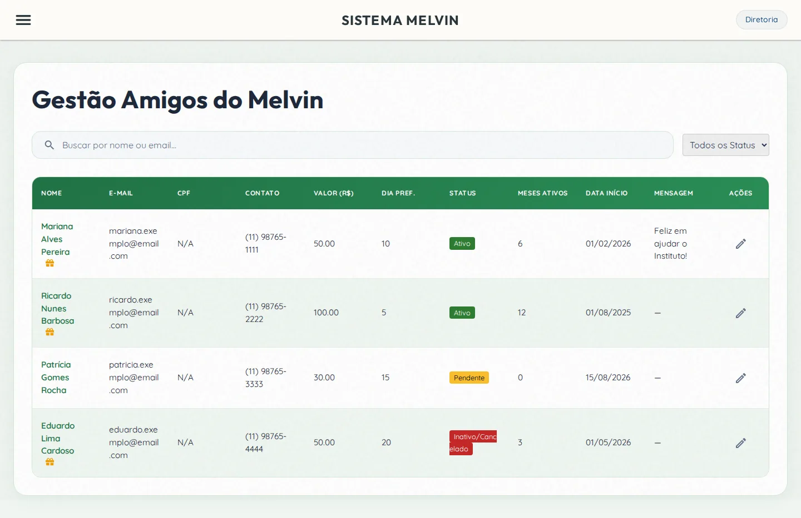
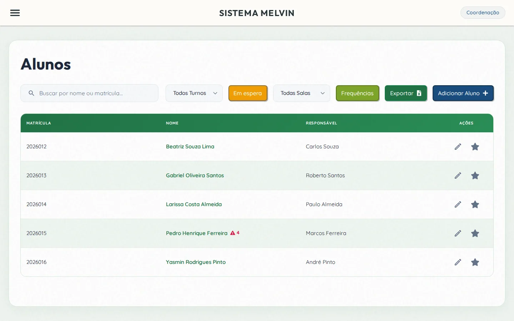
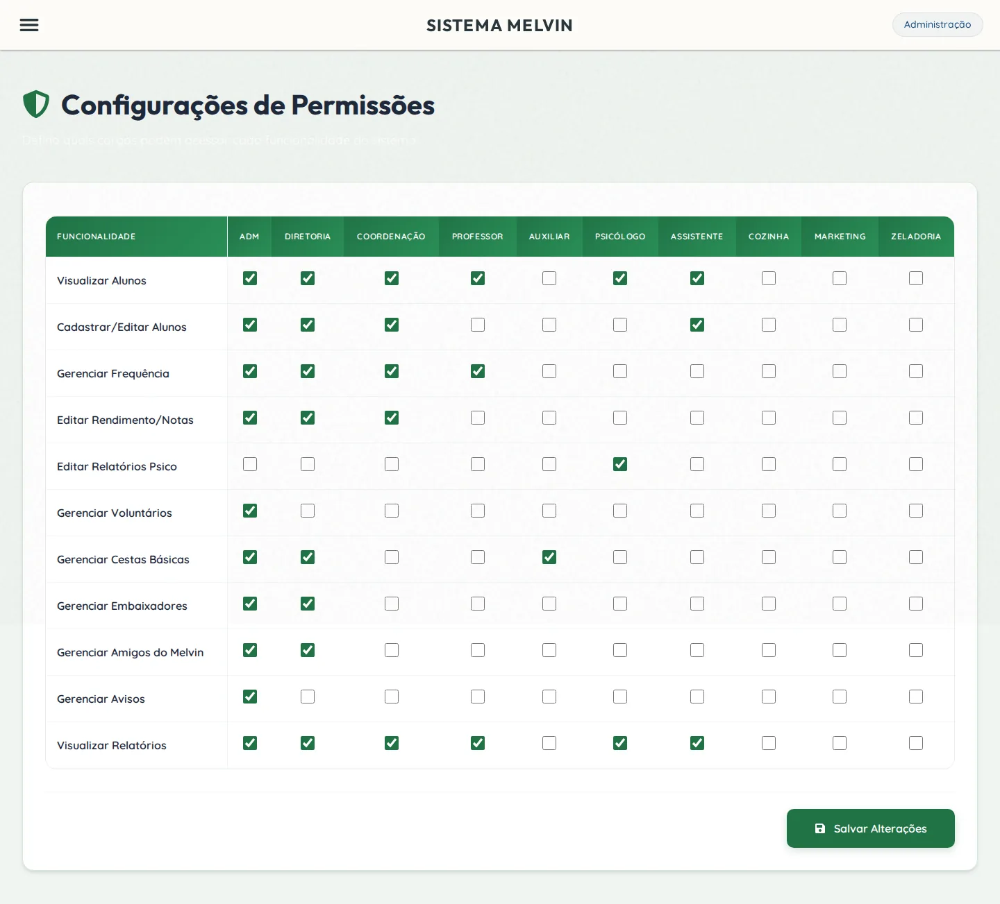
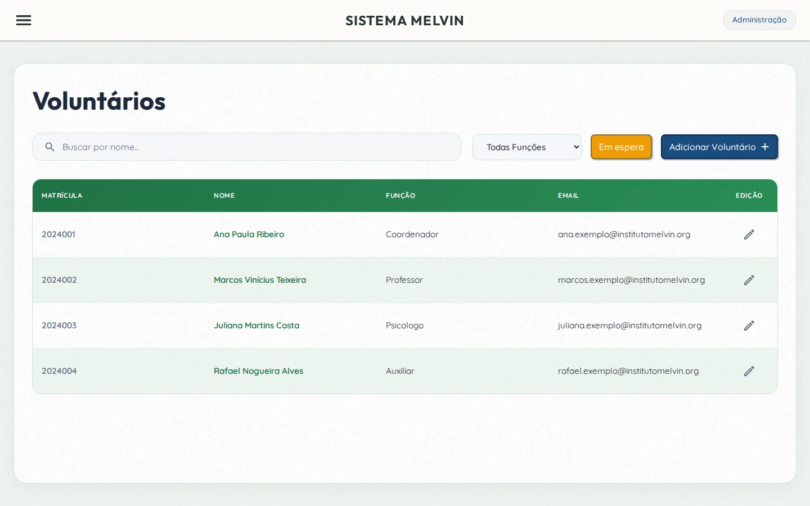
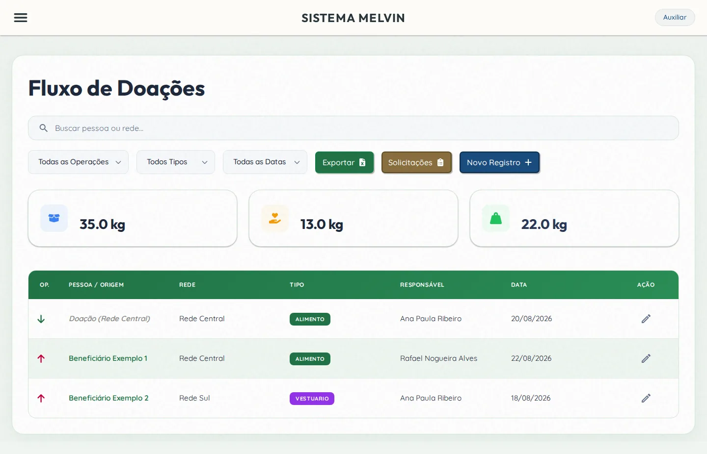

Case · Sistema sob medida
Instituto Melvin: a operação acadêmica inteira em um ERP próprio
Sistema web sob medida para concentrar matrículas, alunos, voluntários, frequência e doações do Instituto Social Melvin em uma única operação — respeitando as regras específicas de um projeto socioeducacional.

Contexto
O Instituto Social Melvin é uma instituição socioeducacional que atende crianças e adolescentes e mobiliza uma rede de voluntários, embaixadores e doadores em torno do projeto.
A operação envolve frentes que normalmente vivem em planilhas e cadernos separados: matrícula e acompanhamento de alunos, escala e dados de voluntários, controle de presença, campanha de doações e distribuição de cestas. Cada frente com regras próprias, e nenhuma conversando com a outra.
O problema
Sem um sistema central, a coordenação gastava tempo consolidando informação à mão e não tinha uma visão única da operação. Alguns gargalos concretos:
- Matrícula e histórico de aluno espalhados entre arquivos e pessoas.
- Controle de frequência feito no papel, difícil de auditar e somar.
- Dados de voluntários sem cadastro padronizado nem controle de acesso.
- Doações e campanhas sem registro integrado ao resto da operação.
- Quem podia ver ou editar o quê dependia de combinação informal, não de regra do sistema.
A solução
Um ERP web sob medida, construído módulo a módulo a partir das regras reais do instituto. Dezessete módulos em produção, entre eles:
- Autenticação & RBAC dinâmico — perfis e permissões configuráveis pela própria coordenação, sem depender de desenvolvedor.
- Gestão de discentes — matrícula, ficha do aluno e acompanhamento em um só lugar.
- Gestão de voluntários — cadastro padronizado, dados e vínculo com a operação.
- Frequência (ponto eletrônico) — presença registrada no sistema, pronta para relatório.
- Amigos do Melvin — doações recorrentes online integradas à gestão financeira (Stripe + webhooks).
- Cestas, embaixadores e avisos — solicitação, triagem e comunicação num fluxo só.
- Ocorrências técnicas — registro e tratamento de incidentes da operação.
- Relatórios e rendimento — números da operação consolidados para a coordenação.
O produto em uso




Resultados
Métricas quantitativas de impacto (horas administrativas economizadas, volume de matrículas e usuários ativos) estão em levantamento com o cliente e serão publicadas após validação.
Engenharia
Depoimento
Publicar apenas com nome, cargo, organização e autorização registrada.
Tem um desafio parecido?
Se a sua operação também vive em planilhas soltas, dá para transformá-la em um sistema só. Conte o cenário e voltamos em até um dia útil com os próximos passos.
Falar sobre meu projeto